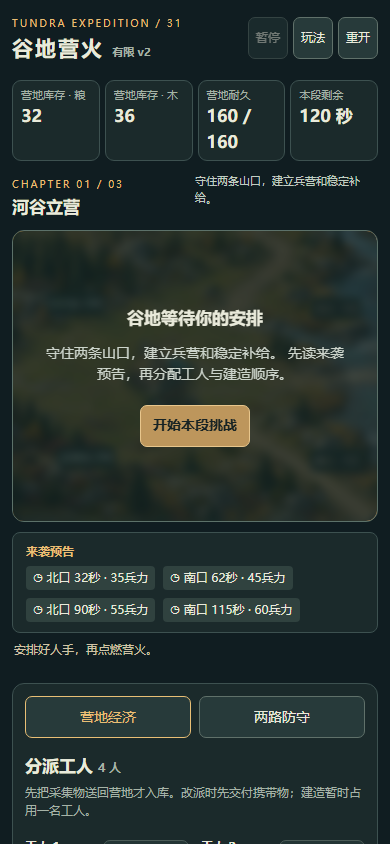
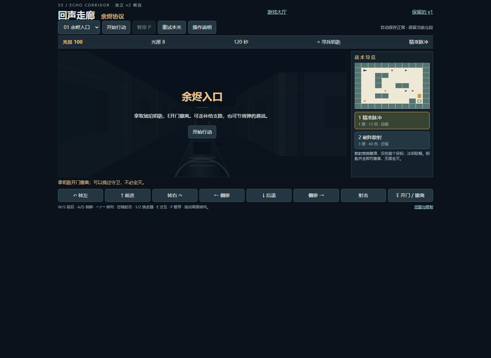
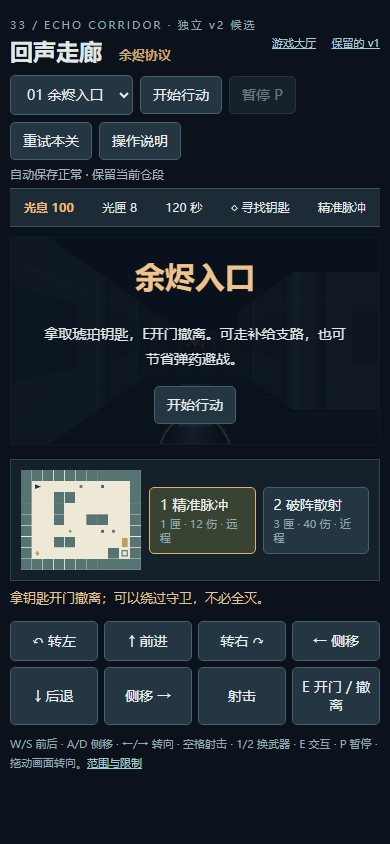
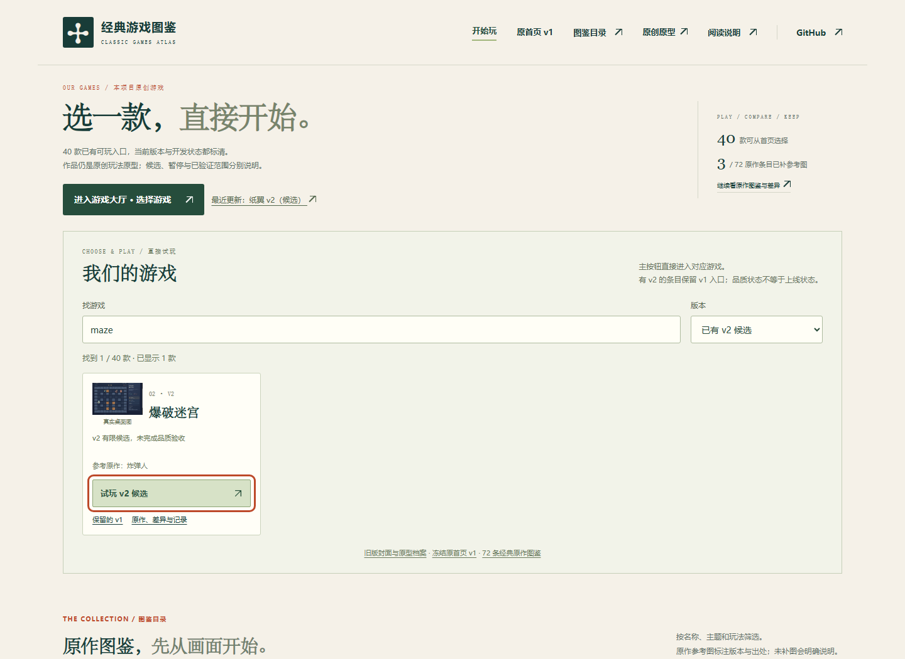
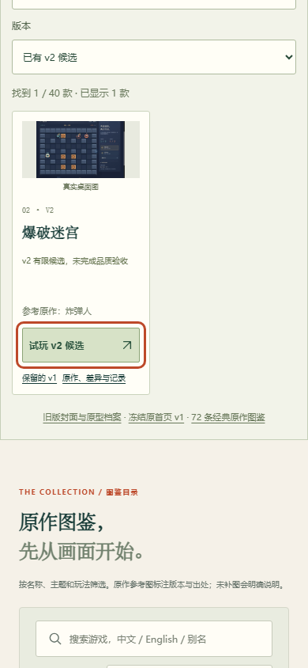
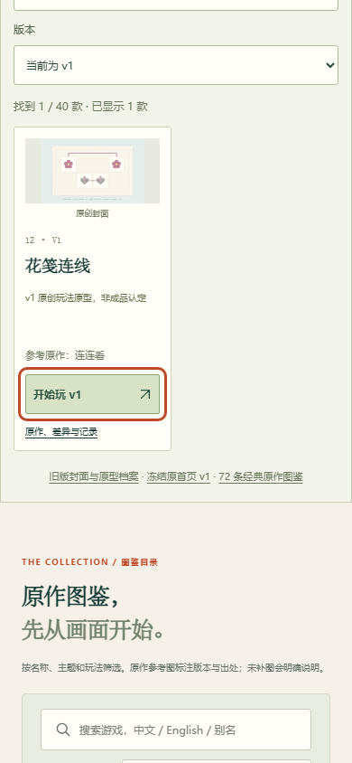
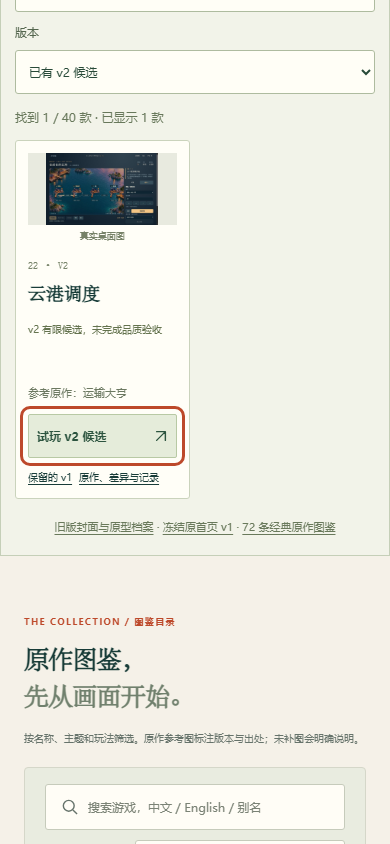
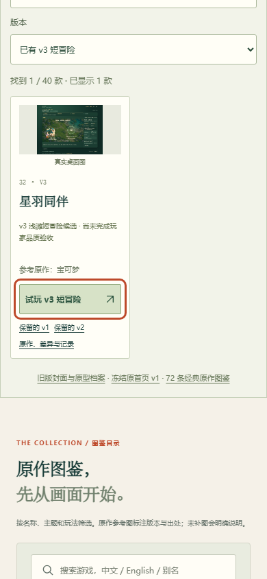
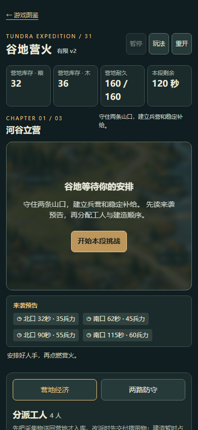

35项逐一静态检查、桌面Enter及390CSS点按返回，共70场景通过。未重跑通关。代表截图与逐项记录分列。
| 作品/推荐入口 | 源码 | 桌面Enter | 窄屏点按 | 改动 |
|---|---|---|---|---|
| 爆破迷宫 maze | 已查 | 通过 | 通过 | hall link |
| 星泡航线 starline | 已查 | 通过 | 通过 | hall link / Enter routing |
| 光轨砖阵 prism | 已查 | 通过 | 通过 | hall link / Enter routing |
| 仓格计划 crate | 已查 | 通过 | 通过 | hall link |
| 山口守望 pass | 已查 | 通过 | 通过 | hall link |
| 风行小径 trail | 已查 | 通过 | 通过 | unchanged |
| 夜航拾光 lantern | 已查 | 通过 | 通过 | hall link |
| 云隙巡航 cloud | 已查 | 通过 | 通过 | hall link |
| 晶簇花园 garden | 已查 | 通过 | 通过 | unchanged |
| 青藤回廊 vine | 已查 | 通过 | 通过 | hall link |
| 花笺连线 petal | 已查 | 通过 | 通过 | hall link |
| 星砂勘探 sand | 已查 | 通过 | 通过 | unchanged |
| 落星弹庭 pinfall | 已查 | 通过 | 通过 | hall link / Enter routing |
| 钢岚突进 gale | 已查 | 通过 | 通过 | hall link |
| 弯道邮差 post | 已查 | 通过 | 通过 | unchanged |
| 灯塔小队 beacon | 已查 | 通过 | 通过 | unchanged |
| 风铃绳旅 chime | 已查 | 通过 | 通过 | hall link |
| 溪谷守芽 brook | 已查 | 通过 | 通过 | hall link |
| 潮汐珠径 tide | 已查 | 通过 | 通过 | unchanged |
| 云港调度 harbor | 已查 | 通过 | 通过 | unchanged |
| 四季小田 farm | 已查 | 通过 | 通过 | unchanged |
| 遗迹灯火 ruins | 已查 | 通过 | 通过 | unchanged |
| 节拍果园 orchard | 已查 | 通过 | 通过 | unchanged |
| 山径快递 courier | 已查 | 通过 | 通过 | unchanged |
| 街角商旅 venture | 已查 | 通过 | 通过 | unchanged |
| 云岛工坊 island | 已查 | 通过 | 通过 | hall link / Enter routing |
| 星环落块 orbit | 已查 | 通过 | 通过 | unchanged |
| 风庭对决 duel | 已查 | 通过 | 通过 | hall link |
| 苔原远征 expedition | 已查 | 通过 | 通过 | mobile return visibility |
| 星羽同伴 feather | 已查 | 通过 | 通过 | unchanged |
| 回声走廊 echo | 已查 | 通过 | 通过 | hall link |
| 街巷护送 escort | 已查 | 通过 | 通过 | hall link |
| 云岬游乐园 coaster | 已查 | 通过 | 通过 | hall link |
| 林野杯赛 kart | 已查 | 通过 | 通过 | hall link |
| 草甸联赛 meadow | 已查 | 通过 | 通过 | unchanged |









